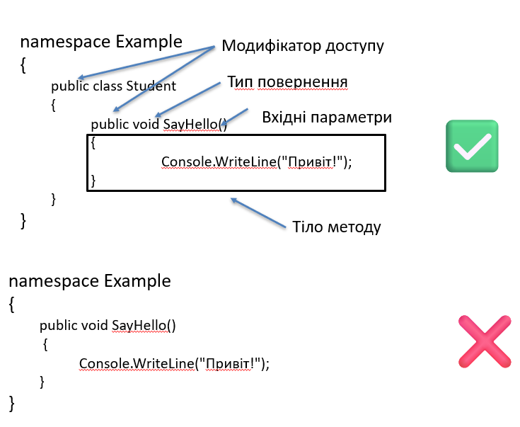

Члени типів
У C# типи можуть містити різні члени, які визначають їхню структуру та поведінку:
- Поля (Fields)
- Методи (Methods)
- Властивості (Properties)
- Події (Events)
- Конструктори (Constructors)
- Деструктори (Destructors або фіналізатори)
Поля (Fields)
Поле – це змінна, оголошена всередині класу або структури, яка зберігає стан об’єкта.
Методи (Methods)
Метод – це іменований блок коду в класі або структурі, який визначає набір інструкцій для виконання певної дії або обчислення.
Загальна схема:
- Тип повернення – що повертає метод (
int,string,void). - НазваМетоду – прийнято писати з великої літери (
SayHello). - Параметри – у круглих дужках, можуть бути відсутні.
- Тіло методу – блок
{ }з кодом.
Приклад:
namespace Example
{
public class Student
{
public void SayHello()
{
Console.WriteLine("Привіт!");
}
}
}
✅ Правильно: метод оголошено в класі. ❌ Неправильно: метод оголошено поза класом.

Властивості (Properties)
Властивість (property) – це спеціальний член класу, який поєднує в собі два методи доступу: get (читання значення) та set (зміна значення). Завдяки властивостям код стає компактним і зрозумілим, оскільки вони дозволяють працювати з полями як зі звичайними змінними, але з можливістю додаткової логіки.
Класичний доступ через методи
public class Student
{
private int _age;
public void SetAge(int value)
{
_age = value;
}
public int GetAge()
{
return _age;
}
}
Повна властивість (Full Property)
public class Student
{
private int _age;
public int Age
{
get { return _age; }
set { _age = value; }
}
}
Автовластивість (Auto-Property)
📌 Автовластивість використовується, коли додаткової логіки у get чи set не потрібно.
Використання:
var student1 = new StudentWithMethods();
student1.SetAge(20);
Console.WriteLine(student1.GetAge());
var student2 = new StudentWithProperty();
student2.Age = 20;
Console.WriteLine(student2.Age);
Події (Events)
Подія (event) – спеціальний член, який дозволяє класу повідомляти інші об’єкти про певну дію.
Конструктори (Constructors)
Конструктор – спеціальний метод, який автоматично викликається при створенні об’єкта для ініціалізації стану.
Особливості конструкторів:
- Назва конструктора збігається з назвою класу.
- Не мають типу повернення (навіть
void). - Можуть мати параметри для початкової ініціалізації.
- Конструкторів може бути декілька (це називається перевантаження конструкторів).
- Якщо конструктор не визначений явно – компілятор додає конструктор за замовчуванням(крнструктор без параметрів).
class Student
{
public string Name { get; set; }
// Конструктор з параметром
public Student(string name)
{
Name = name;
}
// Конструктор за замовчуванням
public Student()
{
Name = "Невідомий";
}
}
Деструктори (Destructors)
Деструктор (фіналізатор) – спеціальний метод, який викликається перед знищенням об’єкта збирачем сміття. Використовується для очищення ресурсів.
Особливості деструкторів:
- Назва деструктора збігається з назвою класу, але перед нею ставиться символ
~. - Не мають параметрів.
- Не мають модифікаторів доступу та типу повернення.
- Використовуються рідко, головним чином для звільнення некерованих ресурсів.
- Виклик деструктора не гарантується в конкретний момент часу – його викликає спеціальна програма, яка називається збирач сміття (GC).